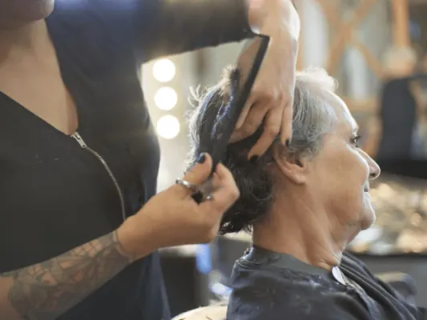
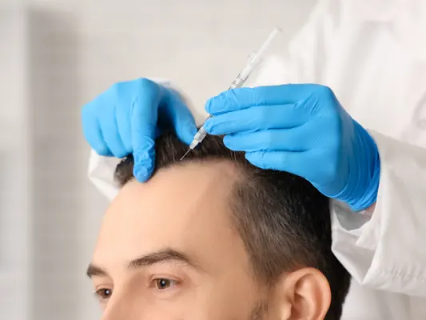

Gids
Kappers in Nijmegen
Bijgewerkt op
In het kort: In Nijmegen kun je kiezen uit kapsalons, barbiers, haarstylisten voor een bruiloft en kappers aan huis. Deze gids bundelt onze tips: adressen voor mannen, kappers voor ouderen en advies over haarverzorging en styling.
Een goede kapper is goud waard. In Nijmegen heb je de keuze uit kapsalons, barbiers, haarstylisten voor een bruiloft en kappers die aan huis komen.
Hier vind je onze artikelen over haar bij elkaar, van verzorgingstips tot de beste adressen voor mannen.
Kappers en barbiers
Onze tien favoriete kappers, van krullenspecialist tot barbershop, en adressen voor een strak kapsel of een verzorgde baard.

Barbershop in Nijmegen: de beste barbier in jouw wijk
Een goede barbershop in Nijmegen, dicht bij huis? Per wijk onze favoriete barbier: centrum, Oost, Waalfront, Dukenburg, Lindenholt, Noord en Groesbeek.…
De 10 beste kappers in Nijmegen
De 10 beste kappers in Nijmegen: zonder afspraak binnenlopen, krullen droog laten knippen, plantaardig kleuren of een strakke fade. Per wijk, met…

Waar in Nijmegen kunnen mannen terecht voor een stijlvolle look?
Op zoek naar een goede barbier of herenkapper in Nijmegen? Dit zijn de beste adressen voor een strak kapsel en verzorgde baard.

Wie verzorgt je haar als je op leeftijd bent?
Wie knipt en verzorgt je haar als je ouder wordt? Tips over kappers aan huis, haarverzorging en kapsels voor senioren.
Haarverzorging en styling
Tips voor elke dag en voor een speciale gelegenheid.

Voorkom een bad hair day met deze fantastische haarverzorgingstips!
Last van pluizig, slap of droog haar? Met deze haarverzorgingstips voorkom je een bad hair day, van de juiste shampoo tot föhnen en stylen.
Haarstyling tips: Schitter met een unieke look!
Een feest of bruiloft op de planning? Met deze haarstyling tips kies je een kapsel dat bij je past en de hele dag mooi blijft.

De perfecte krul, deze haarstylistes maken jouw kapsel tot een waar plaatje
Op je trouwdag wil je stralen. Tips voor het perfecte bruidskapsel en haarstylistes die er een plaatje van maken.
Hoe ga je om met veranderingen van je haar tijdens een zwangerschap?
Dikker, dunner of krullend: je haar kan veranderen tijdens de zwangerschap. Wat er gebeurt en hoe je het goed verzorgt.

Hoe worden de haartransplantatie kosten berekend? (Factoren & Prijs)
Wat kost een haartransplantatie? Uitleg over de factoren die de prijs bepalen, van aantal grafts tot techniek en kliniek.
Andere gidsen: verzorging
Kappers in Nijmegen
Heb je zelf een kapper? Kom hier als partner te staan.
Veelgestelde vragen
Hoe vaak moet je naar de kapper?
Bij kort haar is eens per vier tot zes weken gebruikelijk, bij langer haar eens per twee à drie maanden om de punten gezond te houden.